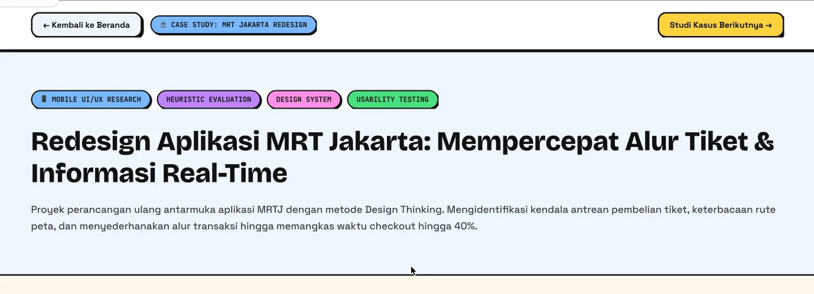
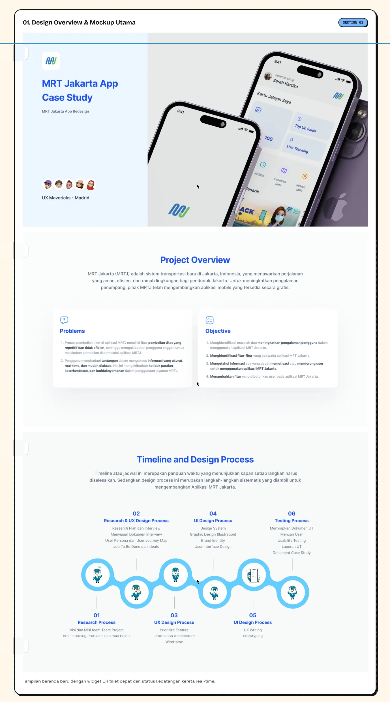
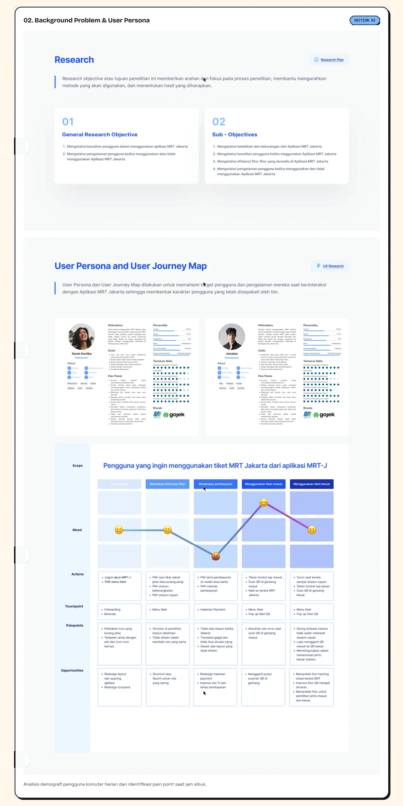
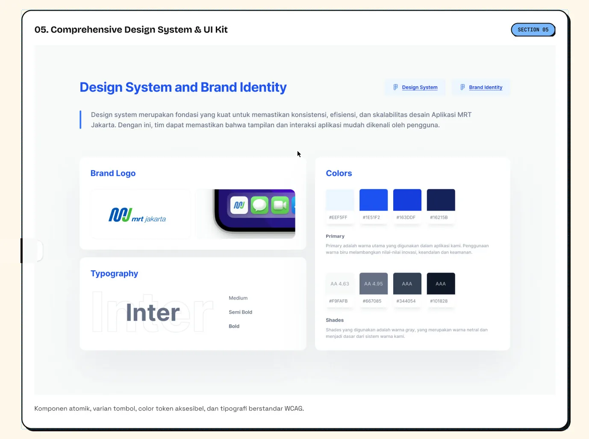
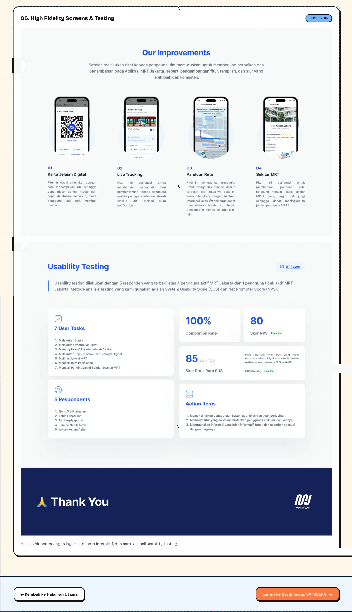

← Semua proyek
STUDI KASUS UI/UX — FULL CASE STUDY
Redesign MRT Jakarta
Checkout tiket 40% lebih cepat — riset, persona, journey map, user flow, design system, improvement dan usability testing (100% task completion).
👇 Ini tampilan full case study-nya dari atas sampai bawah — scroll aja, nggak perlu buka Figma.




